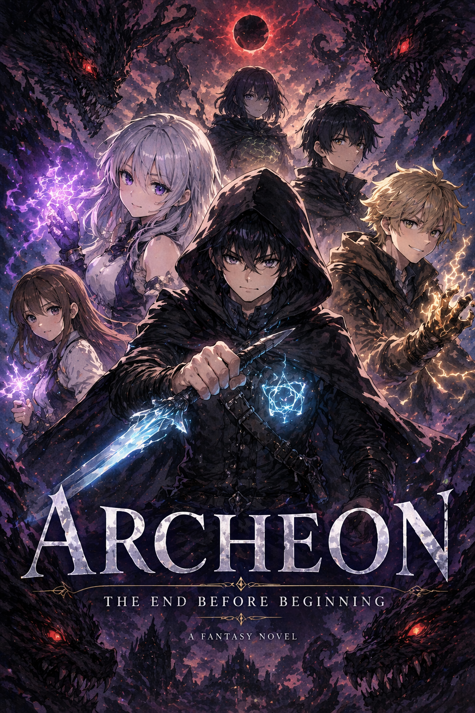

Website ini dibuat oleh Muhammad Alfarel Hafizh. Ini adalah website novel pribadi yang dibuat sekadar iseng untuk membaca novel dengan tampilan modern. TikTok: @varenpenikmatmbgdannaspd Instagram: @varenemci